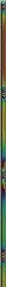

|
 |
|
The Academy of Shaolin System is a traditional martial arts school specializing in Kung Fu, Chinese Jujitsu, Tai Chi Chuan and Qigong. Established in 1967 in Redwood City by Sifu Joe Hing Kwok Chu and in continuous operation ever since, we are the oldest school on the Peninsula. Throughout the years we have sponsored and participated in many full contact tournaments in the Agrodome in Vancouver, B.C., Madison Square Garden in New York City, and various locations in the San Francisco area.
In addition to local newspaper coverage, we have appeared in interviews and demonstrations on local TV.
Web Page Designed by Eric A. Kralicek, © March 10, 2000, all rights reserved.